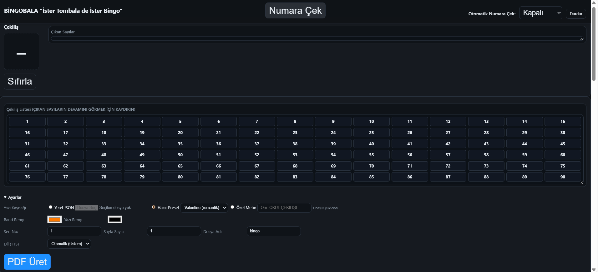

Taksimetre Hesaplama
Gerçek zamanlı taksimetre simülasyonu ile mesafe ve ücret hesaplama aracı. Türkiye'deki şehir içi taksi tarifelerine göre çalışır.
- Mesafe (km) ve bekleme süresi girin
- Şehir seçimi yapın
- “Hesapla” butonuna tıklayın
- Tahmini ücret ekranda görüntülenir

90-Ball Bingo PDF Oluşturucu
Klasik bingo oyunları için rastgele kartlar üretir ve PDF formatında indirmenizi sağlar. Okul etkinlikleri, aile oyun geceleri için eğlenceli ve pratik bir çözümdür.
- Kart sayısını seçin
- “Oluştur” butonuna tıklayın
- PDF dosyası otomatik olarak indirilir
- Kartları yazdırarak oyuna başlayabilirsiniz

WORD-BingoBala - Dijital Bingo ve Çekiliş
Klasik bingo oyununu 6.sınıf öğrencileri için ünite kelimeleri ile hazırladık. PDF kart üretimi ve dijital çekiliş özellikleriyle modern bir deneyim sunar.
- Kart sayısını seçin
- “Oluştur” butonuna tıklayın
- PDF dosyası otomatik olarak indirilir
- Kartları yazdırarak ya da telefondan işaretleyerek oyuna başlayabilirsiniz